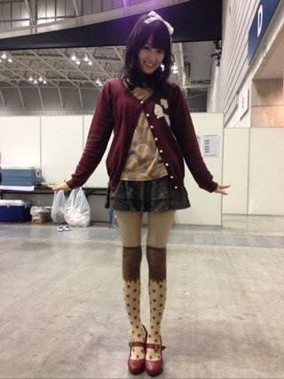
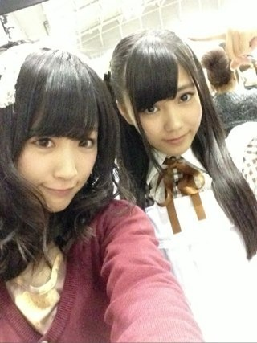
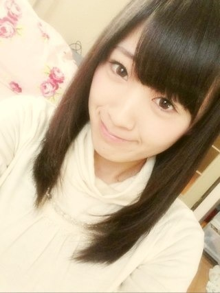
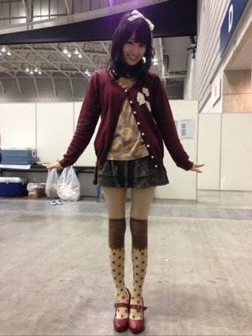
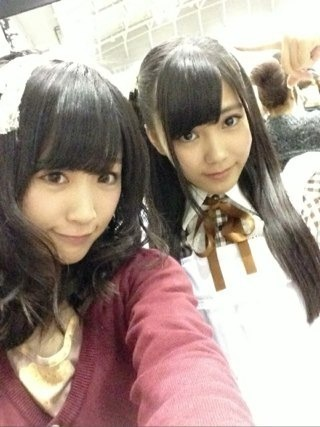
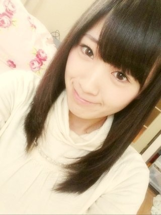

2013/0115Tue（´-`）.｡oO(かずみん×133
いつも応援ありがとうございます！
昨日は個別握手会でした！
雪の影響で交通機関に
乱れが生じましたが
足元の悪い中
来て下さったみなさん、
本当にありがとうございました！
前回のブログも優しいコメントが
たくさん...(T_T)
ありがとう！！
こんな高山ですが、
これからもみなさんの期待に
答えられるように
ガジ頑張りますので、
応援よろしくお願いします！
そしてセンター試験が
近づいてきましたね。
私は応援することしかできませんが
自分を信じて皆さん、頑張って下さい！
私も5thに向けて頑張るぞ！！
------
昨日の私服はこんな感じ☆

クッキーのロンTにチョコのソックス。
美味しそうでしょ( ^ω^ )？
エミキュこと
エミリーテンプルキュートのです^^
そして頭にはりぼんを付けました♪

まさかの見えないパターン。笑
飴と鞭でおそろの
りぼん付けたのです(*^o^*)
流石に私はハーフアップは
できなかったわ！笑
----
今日は久々にストレートにしました！

黒髪はお好きですか(^^)？
今日はこの辺でっ！
おやすみなさい...☆
昨日は個別握手会でした！
雪の影響で交通機関に
乱れが生じましたが
足元の悪い中
来て下さったみなさん、
本当にありがとうございました！
前回のブログも優しいコメントが
たくさん...(T_T)
ありがとう！！
こんな高山ですが、
これからもみなさんの期待に
答えられるように
ガジ頑張りますので、
応援よろしくお願いします！
そしてセンター試験が
近づいてきましたね。
私は応援することしかできませんが
自分を信じて皆さん、頑張って下さい！
私も5thに向けて頑張るぞ！！
------
昨日の私服はこんな感じ☆

クッキーのロンTにチョコのソックス。
美味しそうでしょ( ^ω^ )？
エミキュこと
エミリーテンプルキュートのです^^
そして頭にはりぼんを付けました♪

まさかの見えないパターン。笑
飴と鞭でおそろの
りぼん付けたのです(*^o^*)
流石に私はハーフアップは
できなかったわ！笑
----
今日は久々にストレートにしました！

黒髪はお好きですか(^^)？
今日はこの辺でっ！
おやすみなさい...☆
2013/01/15 22:18


コメント(512)
一回失敗してるから今年は頑張らないと...
不安が大きくなるばかりだよ
乃木坂46のイベントに参加するためにも頑張らなきゃ
黒髪すきだよ！！！
ストレートならもっといい
ここだけの話せいたんも黒髪の方がいいと思うんだ
かずみん会ったら黒髪勧めといてくれる？
はあ～～
乃木坂大好きすぎて、勉強に集中できん笑笑
乃木坂46ありがとう。←なんか言いたくなった
質問!!!
受験生に今、必要なことは何ですか？
結構真面目な質問www
でわ、おやすみなさい★
♪Q中３♪
あ、昨日、握手会お疲れ坂でした～～！
俺も早く行きたい…
黒好き
俺は行けなかったけど、友達がかずみんめっちゃかわいいって騒いでたよ♪( ´▽｀)
次のシングルではかずみんのレーン行きたいな！
めっちゃ楽しみ！\(//∇//)\
これからもがんばって！
握手会行きたかったなー
かずみん頑張れぃ
握手会でかずみんにオシャレだねって言われてめっちゃ嬉しかったです。
約束したんで次も絶対行きますね！
大好きです(*^^*)
地元では雪の影響で二つの橋で事故で、
大渋滞でした(*^^*)笑
そんななか友達と電車でドンキホーテ行って
電車に遅れが出て門限に間に合わず
親の逆鱗にふれるパターンですねはい笑
黒髪最高やね(^O^)／
なぜか関西弁www
毎回毎回かずみんの私服はかわいいし面白さもあったり楽しみだわ(´∀｀)
雪すごかったね(´｀)
横浜とは思えなかった。
リボン見える写真欲しかったな(笑)
かずみん５thもポジティブSAY＼(^O^)／
アメイジングな個人PV待ってるね！
じゃ、おやすみ
次こそ行くね！
かずみん私服かわいい！
これからも応援してるよー*\(^o^)/*
アイドルは
黒髪命です笑
ガジで！！！笑
この間
握手会の頑張りに
風に吹き飛ばされたよ笑
バク宙みたくなった笑
←心配して！笑
ではでは。
明日も1日頑張りまいやん！！
かずみんはストレートがいいよ
足なげー
美脚
気をつけてくださいね！
かずみさんほんと足細いっすね
めっちゃ美脚ですﾟ+.(◕ฺ ω◕ฺ )ﾟ+.
黒髪ストレートも好きですがやっぱかずみさんのパーマがすきです！
応援しとるで！
かずみん私服
かわいいやないか（＾ω＾）
足めっちゃ細いなぁ♪( ´▽｀)
黒髪めっちゃすきよー（≧∇≦）
染めとるよりは
黒髪の方がいい*\(^o^)/*
かずみんはずっと
黒髪よね（≧∇≦）？
雪ほんとやばかったみたいだすね！
応援しますよーフレーヾ(T^Tゞ)フレー
センターか…俺も一年後ですよ(´-ω-`)
さすが私服おしゃれですね(≧∇≦)
めっちゃ可愛い(*´`)
ストレートヽ(☆▽☆)ノ うひょ～☆
黒髪大好きですw
おやすみなさい☆GOODNIGHT☆
昨日はお疲れ様～！
楽しかったわww
無事に帰れたしな(笑)
来月京都まで１ヶ月、、、長いな泣
京都の日は誕生日やし楽しみや
かずみんの券増やしてもうた←
内緒な(笑)
明後日デジモン発売やで
買うしか
早くやりたいわー
ほなねﾉｼ
かずみんらしい！
5thに向けてガチ頑張れ！！
5thシングルはどんな感じになるの？
黒髪好きっす。
ヤバイ、惚れてしまうw
飴と鞭良いね！
俺得やわー♪
そ れ よ りなんと
脚が細く見えるぜ！！
ビックリ！
…じゃなくて
アメイジング＼(^^)／
どんなマジック使ったんや？笑
白状しちゃいな！
ほなね！
黒髪、めっちゃ好きやねん
かずみんはこのまま黒髪でいて欲しいです・・・
ちなみにかずみんの「口元
黒髪大好きです
これから寒くなると思うけど
体に気をつけてポジティブに！
ポジピース(^^)v
かずみんへのコメント初めてです！
乃木どこではいつも笑わせてくれるから面白いよ！
かずみんはメンバーの中でムードメーカーだからこれからも頑張ってね
ポジピース！
握手会お疲れ様です＼(^o^)／
たくさん雪が降っていたので、すごく心配しましたが、なんとか出来たみたいでよかったです
そしておいしそうですね(笑)
僕黒髪好きなんで、ストレートのかずみんが見れて
嬉しいです
それではまた❕❕
そうすれば、あと少しで握手行けるってなるのに！！！
かずみんどんどんかわいくなってる！
早く会いたい！！
けど、昨日夢にかずみんがでてきた！(笑)
めちゃくちゃ嬉しそうな顔してたな♪
ストレートも巻いてるのも似合うねー＼(^o^)／
黒髪かずみん大好きだよ～
握手会お疲れ様(^O^)
頑張ってるかずみさんを応援し続けたいなと思う！
センター試験か。俺は一昨年受けたわ！
今はちゃんと大学生やってます(^∧^)
髪だいぶのびたね！
黒髪サイコー
特に黒髪ロング好きですわ(^_^)v
(￣∀￣)ﾉｼんじゃまた～
ガジ頑張ってください！（笑）
ストレートも黒髪も大好きですよ
似合っててて、かわいいです
ポジピース!
かずみんこんばんわ
握手会行ったけどかずみんレーンは券が無くて…
2月会いましょ？
待っててくれたら嬉しいです。
でも昨日の握手会でななみんに迷惑掛けちゃって。
こんなの書くことじゃ無いんだけど、今めっちゃ落ち込んでます。
謝りたいんだけど謝る方法が無くて。
かずみんの写メ見て元気出します
黒髮好きですよ！
かずみん似合うからさ！
茶髪のかずみんも好きですよ！これぐらいがベストかな！
ななみん元気かな？
ごめんなさいこんなコメント。
かずみん応援してます！
明日も頑張って下さいね！
おやすみなさい。
昨日の握手会楽しい時間をありがとう～♪♪
服美味しそうだなーって思って見てたよ(^q^)
帰りは雪で大変だったけど、なんとか八時間かけて名古屋に到着したよ！
へとへとだったけどかずみんとの楽しい時間を思い出したら元気出た！
また来月もよろしくね(^-^)
足が細いよー
ちゃんと食べてる？(´O｀)
体には気をつけてね(*´ω`*)
5thも頑張ってね！
黒髪ロングやね女の子は
黒のストレートヘアいいですよ
チョコのソックス最高です
本当は握手行きたかった(≧∇≦)
次名古屋来ら行きます
次名古屋来ら行きます
握手会行きたかった行きたかった行きたかったー(;o;)
バイトとテスト前だから行けなかったよ・・・
早くかずみんとお話したいな♪
写真のひなちゃん、まゆゆみたい(笑)
可愛いー＼(^o^)／
かずみんは黒髪がお似合いよ!
東京は雪が氷って滑りやすくなってるみたいだから気をつけてね(;o;)
怪我しないよーに!
ゆみちでした(・∀・)
勉強頑張ります！
昨日は寒い中、個別握手会お疲れ様でした。
しかし、かずみさんは足が細いですね～
なんか昨日の格好だとポッキーに見えちゃった(笑)
髪型はポニーテールやストレートが良く似合いますよ
黒髪も好きです
じゃあまたね
おやすみなさい
わたしも二年後にはセンター試験です
やだな〜こわいな〜
私服かわいいです
おいしそう
かずみんの細さとスタイルすっごく憧れ〜
かずみんの黒髪だいすきっ
おやすみ〜
お疲れ様です(>_<)
これからも頑張ってくださいね(^0^)/
おれが行った時は、かずみんの大きなリボンは見れなかったわ。
残念無念なり。
かずみんは、やっぱり黒髪が似合う！
サムライ！！！
高山ちゃんとなぁちゃんにアメイジング。
雪でも2人にアメイジング。
今度は頑張って行くね！＼(^_^)／
よろしくね！(^-^)/
にしてもガジって流行りませんな～～(笑)白石さん辺りに上げたらどーですかね(笑)
にしても、なるほろな感じの可愛い画になってるでやんすね
最近読んでる『天国の罠』(著・堂場舜一)ってのが深くて面白いでやんす(´・ω・｀)(^^;)
昨日は、ありがとう。楽しかった。
かずみさん大好きだわ。
昨日は、えらそうにかずみさん絶対に8福神に戻すって言ってごめんね。
だけど、ギュッと握ってくれた手。嬉しかった。
今年は、俺も頑張るわ。
zeepの楽しそうなかずみさんの顏みたからなー。
もっと前で歌わせてあげたい。もっとね。
頑張るわー。
2月まで待てないわ。体調気をつけてね。
(^O^)/
昨日は個別お疲れちゃんね！
クッキー&チョコのかずみん、食べちゃいたい！(笑)
いやいや、メッチャ似合っててカワイイでございますよお嬢様！
＼^o^／
ってか、ゆったんもハーフツインやったんだから、かずみんもハーフアップしてみようよ！
女は度胸！
(。-∀-)b♪
して、黒髪大好きです！(照)
じゃ、今日も１日お疲れちゃんね！
またね！
(´・ω・`)/~~~
今度の横浜は晴れるといいな～(;▽;)
リボンかわゆい！！
黒髪ストレートも最高！！(>.<)笑
個別三枚追加で買ってしまったよ(笑)
たくさん話できたら幸いどす(´▽｀)
デワデワっち(￣^￣)ゞ
可愛すぎですね。笑
コメントする